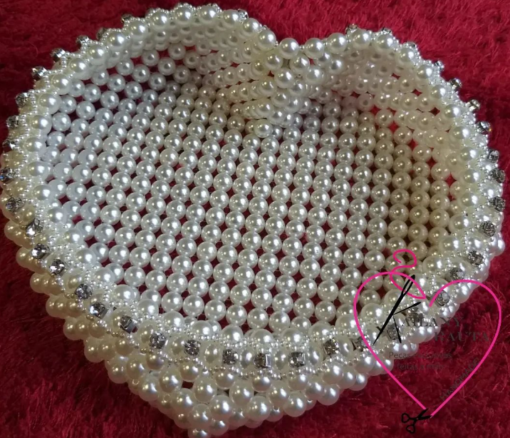

Peças já confeccionadas
Página Inicial | Acesse toda a linha de crochePorta Canetas

Esta peça é confeccionada manualmente de pérolas com strass dourado.
Coração de pérolas
Ideal para guardar joias, produtos de higiene pessoal, no quarto, no lavado